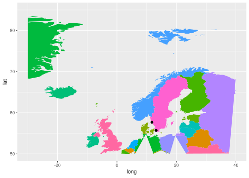
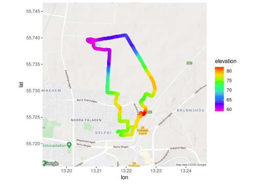

ggmap section
Workshop on ggplot
Lokesh Mano • 27-Oct-2020
1 Making maps with R
To do this exercise, we will use a separate dataset and it can be downloaded here.
If you would like to keep the data tree same as the exercises here, you can extract the zip file inside the data directory. So, the file tree would like this:
- ggplot_geneco_course
- data
- archaea_nexus.txt
- arch_newick.txt
- counts_deseq2.txt
- counts_filtered.txt
- counts_raw.txt
- counts_vst.txt
- human_biomaRt_annotation.csv
- metadata_raw.csv
- Time_t24_vs_t0.txt
- Time_t2_vs_t0.txt
- Time_t6_vs_t0.txt
- tree_env.tsv
- tree_hmap.tsv
- ggmap_data
- bc_sites.rds
- bike-ride.csv
- sisquoc-points.txt
- world_population.tsv
- data
Before, we go into ggmap package and it’s options. Let us take a quick look about some of the other options available for making maps in R.
1.1 maps and mapdata
Here we will see, how some of the traditional R packages maps and mapdata were used and how we could implement the information from these packages into ggplot. Some pointers about these packages are:
- The maps package contains a lot of outlines of continents, countries, states, and counties that have been with R for a long time.
- The mapdata package contains a few more, higher-resolution outlines.
- The maps package comes with a plotting function, but, we will opt to use ggplot2 to plot the maps in the maps package.
- Recall that ggplot2 operates on data frames. Therefore we need some way to translate the maps data into a data frame format the ggplot can use.
Let us start with how to install these packages and look at their simple functions:
if (!requireNamespace("maps", quietly = TRUE)){
install.packages("maps", dependencies = TRUE)
}
if (!requireNamespace("mapdata", quietly = TRUE)){
install.packages("mapdata", dependencies = TRUE)
}
library(maps)
library(mapdata)
library(ggplot2)
library(dplyr)
library(reshape2)
library(tidyverse)
world <- map_data("world")
head(world)output
## long lat group order region subregion
## 1 -69.89912 12.45200 1 1 Aruba <NA>
## 2 -69.89571 12.42300 1 2 Aruba <NA>
## 3 -69.94219 12.43853 1 3 Aruba <NA>
## 4 -70.00415 12.50049 1 4 Aruba <NA>
## 5 -70.06612 12.54697 1 5 Aruba <NA>
## 6 -70.05088 12.59707 1 6 Aruba <NA>The structure of this data-set could be explained as follows:
longis longitude. Things to the west of the prime meridian are negative.latis latitude.order: This just shows in which order ggplot should “connect the dots”regionandsubregiontell what region or subregion a set of points surrounds.group: This is very important! ggplot2’s functions can take a group argument which controls (amongst other things) whether adjacent points should be connected by lines. If they are in the same group, then they get connected, but if they are in different groups then they don’t.- Essentially, having to points in different groups means that ggplot “lifts the pen” when going between them.
To plot the map, in a pretty way:
gg1 <- ggplot(data = world, aes(x=long, y = lat)) +
geom_polygon(aes(group = group)) +
theme(legend.position = "none")
gg1plot

Note New Zealand was not missed in this map ;)
- Maps in this format can be plotted with the polygon geom. i.e. using geom_polygon().
geom_polygon()drawn lines between points and “closes them up” (i.e. draws a line from the last point back to the first point)- You have to map the group aesthetic to the group column
- Of course, x = long and y = lat are the other aesthetics.
You can test it out how the data looks like without using the group aesthetic
From the dataset we have, we can also draw the border lines representing the different countries based on the variable region.
gg2 <- ggplot(data = world, aes(x=long, y = lat)) +
geom_polygon(aes(group = group, fill = region)) +
theme(legend.position = "none")
gg2plot

1.1.1 Adding points to map
Now, in this huge map, let us try to add some points like our favourite city Lund and few others.
labs <- data.frame(
long = c(13.1629767,11.7537556,16.3100205,80.0689272),
lat = c(55.7068448,57.7010982,48.220778,13.0478223),
names = c("LUND", "GBG", "Vienna", "Chennai"),
stringsAsFactors = FALSE
)
gg2 +
geom_point(data = labs, aes(x = long, y = lat), color = "black", size = 2) plot

Note You can also import the points from a file and store in a data frame.
1.1.2 Zooming in
Unlike in normal ggplots, to zoom into a section of the map, if we try to use the xlim() and ylim() functions:
gg2 +
geom_point(data = labs, aes(x = long, y = lat), color = "black", size = 2) +
xlim(c(-30,40)) +
ylim(c(50,85))plot

You can see that this subsection of the map is not very good, you can notice it especially in the area of Germany and Poland. This is because the latitude and longtitude does not really work like axes on a plot and the structure of the data-set we have here doesn’t support it that way.
We will go through a function in ggmap to get one of the nicer ways to get a subsection in those measures. But, with the data we have here, it is possible get a subset of countries:
1.1.3 Continous data
Let’s see how we can add a continous data like the World population statistics on to the above map. We can do this by importing the file with the population information and join it to the data set, we have with left_join()
pop_info <- read.table("data/ggmap_data/world_population.tsv", header = T, row.names = 1, sep = "\t")
head(pop_info)output
## region PopMale PopFemale PopTotal PopDensity
## 1 Afghanistan 19976.26 18952.08 38928.34 59.627
## 2 Africa 669878.34 670719.77 1340598.11 45.216
## 3 African Group 668995.56 669831.03 1338826.59 45.571
## 4 African Union 669307.82 670116.10 1339423.92 45.182
## 5 African Union: Central Africa 79260.91 79358.73 158619.64 30.066
## 6 African Union: Eastern Africa 195662.62 196901.05 392563.67 61.404Note Here the values are in the unit of thousands.

2 ggmap
ggmap is an R package that makes it easy to retrieve raster map tiles from popular online mapping services like Google Maps and Stamen Maps and plot them using the ggplot2 framework:
You can find more information about the R package here
2.1 How ggmap works
- ggmap simplifies the process of downloading base maps from Google or Open Street Maps or Stamen Maps to use in the background of your plots.
- It also sets the axis scales, etc, in a nice way.
- Once you have gotten your maps, you make a call with
ggmap()much as you would withggplot()
Here we will try to see some of the important functions that this package provides and how we can use it display the findings in a nicer way.
2.2 Discrete data
if (!requireNamespace("ggmap", quietly = TRUE)){
install.packages("ggmap", dependencies = TRUE)
}
library(ggmap)
sisquoc <- read.table("data/ggmap_data/sisquoc-points.txt", sep = "\t", header = TRUE)
head(sisquoc)output
## name lon lat
## 1 a17 -119.7603 34.75474
## 2 a20-24 -119.7563 34.75380
## 3 a25-28 -119.7537 34.75371
## 4 a18,19 -119.7573 34.75409
## 5 a35,36 -119.7467 34.75144
## 6 a31 -119.7478 34.75234 Note ggmap tends to use “lon” instead of “long” for longitude.
Now that we have the zoom region we are after, we can get the map from “google” using the get_map() function. Then plot the points on the river from the data using geom_point()
Note To use Google maps, it is necessary to get an API key from google for your account and then register the API key in your R using the function register_google()
get_map() function requires:
location: for which I prefer to give a centroid location meaning like one location point with latitude and longtitude. So, here one could take the mean of all the latitude and longtitude values.maptypeandsource: This is more upt your taste. You can find all the different options by?get_map()zoom: This typically from the center point how much zoom do you need to acquire: In google maps, this is in the range of 3 (to a house) to 20 (the entire world)
ll_means <- sapply(sisquoc[2:3], mean)
sq_map2 <- get_map(location = ll_means, maptype = "satellite", source = "google", zoom = 15)
ggmap(sq_map2) + geom_point(data = sisquoc, mapping = aes(x = lon, y = lat), color = "red") plot

In here, we just managed to get an average of all the latitudes and the longtiudes in our data points that would give a centroid value and grabbed the map around the centroid.
Here we can also add some more information around these points
ggmap(sq_map2) +
geom_point(data = sisquoc, color = "red", size = 3) +
geom_text(data = sisquoc, aes(label = paste(" ", as.character(name), sep="")), angle = 60, hjust = 0, color = "yellow")plot

How about if we use the “terrain” type of map:
2.3 Continous data
Let us take the data points from a bike ride and see how we can plot it better:
output
## lon lat elevation time
## 1 -122.0646 36.95144 15.8 2011-12-08T19:37:56Z
## 2 -122.0646 36.95191 15.5 2011-12-08T19:37:59Z
## 3 -122.0645 36.95201 15.4 2011-12-08T19:38:04Z
## 4 -122.0645 36.95218 15.5 2011-12-08T19:38:07Z
## 5 -122.0643 36.95224 15.7 2011-12-08T19:38:10Z
## 6 -122.0642 36.95233 15.8 2011-12-08T19:38:13ZNow let us try to plot the data:
bikemap1 <- get_map(location = c(-122.080954, 36.971709), maptype = "terrain", source = "google", zoom = 14)
ggmap(bikemap1) +
geom_path(data = bike, aes(color = elevation), size = 3, lineend = "round") +
scale_color_gradientn(colours = rainbow(7), breaks = seq(25, 200, by = 25))plot

Note getting the right zoom and position for the map is sort of trial and error. You can go to google maps to figure out where the center should be (right click and choose “What’s here?” to get the lat-long of any point. )